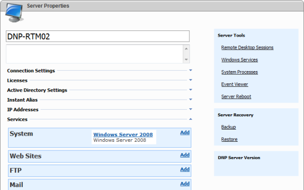
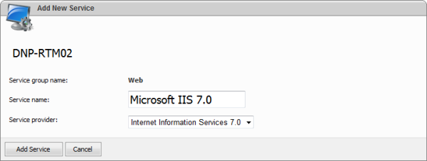
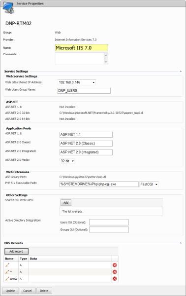
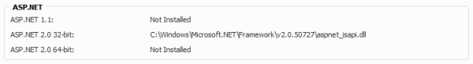
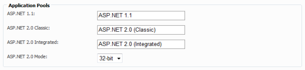
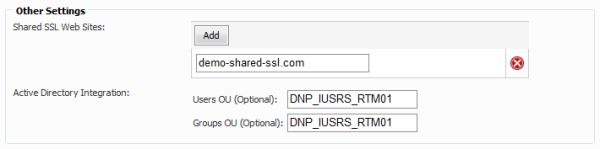

Microsoft IIS 7.0 Provider Settings
Preface: this guide is primarily intended to the technical audience, system administrators or anyone who is dealt with installing, configuring or setting up the hosting environment powered by WebsitePanel Control Panel hosting management solution.
The article doesn't cover steps how to install and configure and it is supposed that Microsoft IIS 7.0 is already installed on the server.
If the server that's already registered in WSP doesn't have Microsoft IIS 7.0 service provider added, then please open its details page and click on "Add" link located in Web Sites section (see the screenshot below).

Note: OS service provider should be already configured on the server prior registering IIS 7.0 provider (as it's shown on the screenshot above). Otherwise you might trap into troubles related to the incorrect initial setup. It might leads to the complete environment reinstallation from scratch.
Next after clicking "Add" link you'll be redirected to "Add New Service" page. There you should select "Internet Information Services 7.0" service provider and click "Add Service" button.

Then, you'll be redirected to the service provider settings page. Provider settings page split into 6 sections that allow to adjust the way how to provision web sites and application pools being created and much more.

Here goes the description of the provider settings available for customization purposes grouped by the section label and samples how to use these settings effectively.
Web Service Settings
This section allows you specify shared IP address that will be used for web sites being created and customize NTFS group name that is used by the system to assign anonymous identities to when provisioning an anonymous identity for a newly created web site. Grouping anonymous identites keeps your environment well-organized and allows to manage NTFS permissions for anonymous identities more effectively.
ASP.NET
This section does not allow you to do any customization but instead it detects automatically which ASP.NET frameworks are installed on the server and displaying corresponding information. From the screenshot below you might see that the section is intended for informational purposes only.

Application Pools
This section allows you to customize shared application pools* names and specify whether to run ASP.NET 2.0 web apps in 32-bit or 64-bit mode. If you run any edition of Windows Server 2008 x64 operating system and wish make 64-bit mode for consumer web apps available then it is recommended to switch ASP.NET 2.0 Mode setting to 64-bit. Remaining fields are intended to customize shared application pools* names for ASP.NET 1.1, 2.0 Classic and Integrated.

* Shared application pools are intended to host consumers web sites created by the system for hosting accounts with the "Dedicated App Pool" quota disabled. For further information about hosting plans and quotas please refer to the following article.
Web Extensions
This section informs whether ASP scripting is supported by the web server and allows you configure PHP scripting support for consumer web sites.
Other Settings
This section allows you configure Shared SSL feature as well as customize several configuration options such as Users OU and Groups OU when Active Directory integration mode is used.
Grouping users and groups within the Active Directory-enabled environment keeps organizational data well-organized and allows to manage NTFS permissions for these OUs more effectively. While Shared SSL feature allows you to shared a domain-binded SSL certificate among your customers allowing them create virtual directories under the SSL-secured web site and therefore benefit even from domain-binded SSL certificate*.

* Please note that the web site(s) listed in Shared SSL Web Sites section should exist on the web server, otherwise the feature will fail to create virtual folders under these web site and work properly.